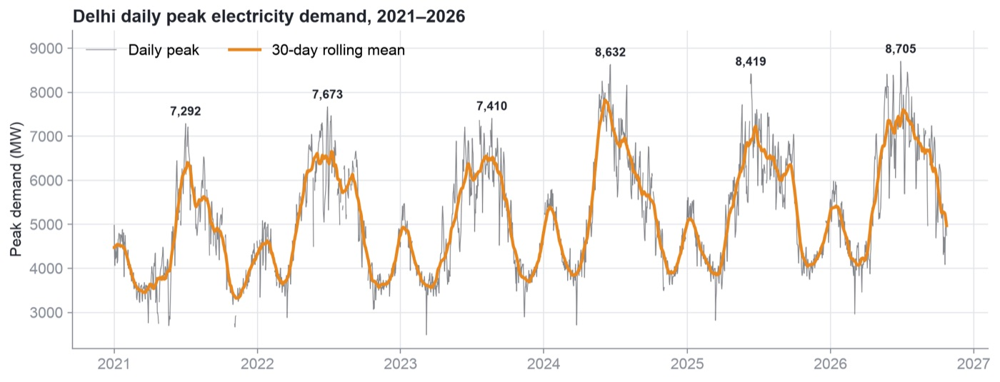
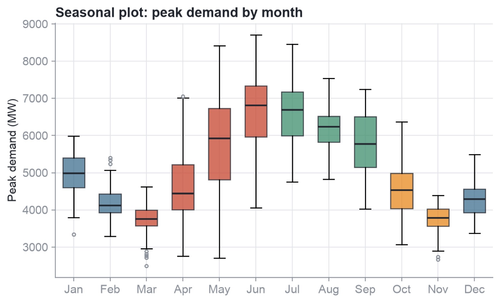
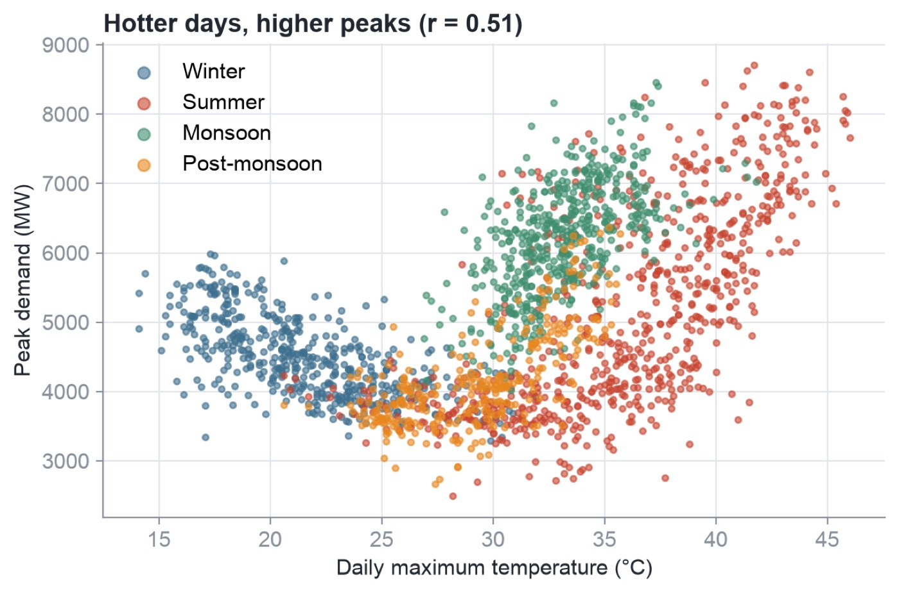
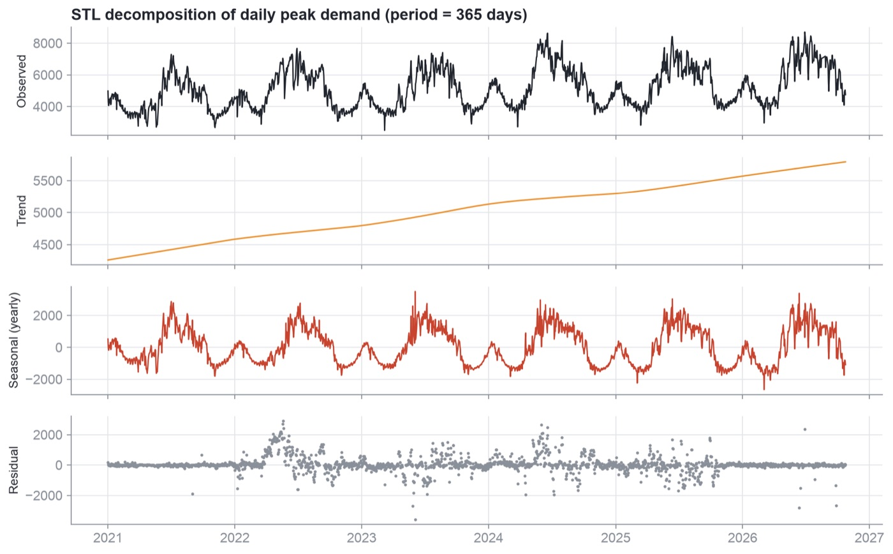
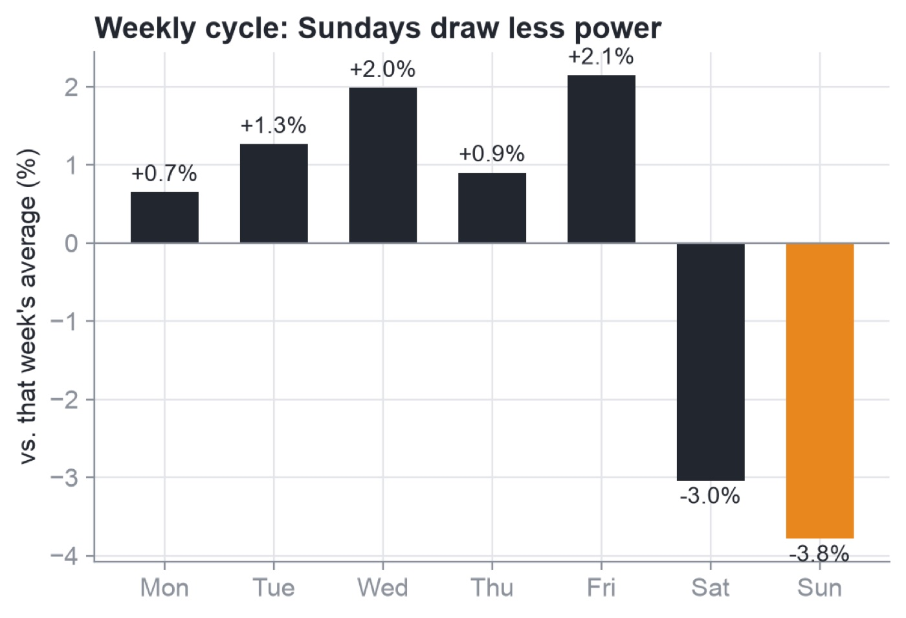
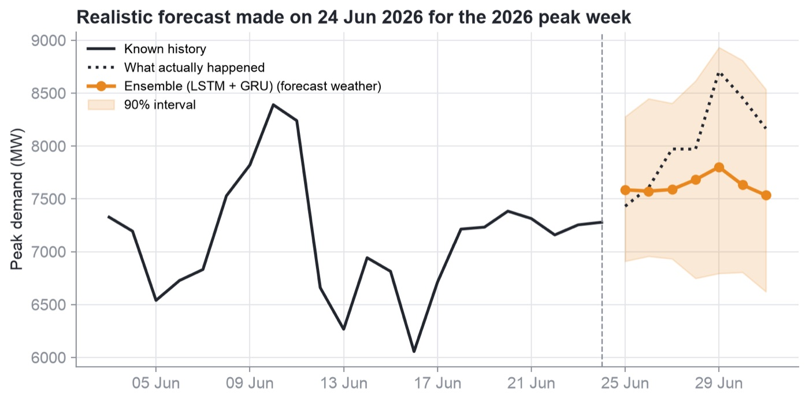
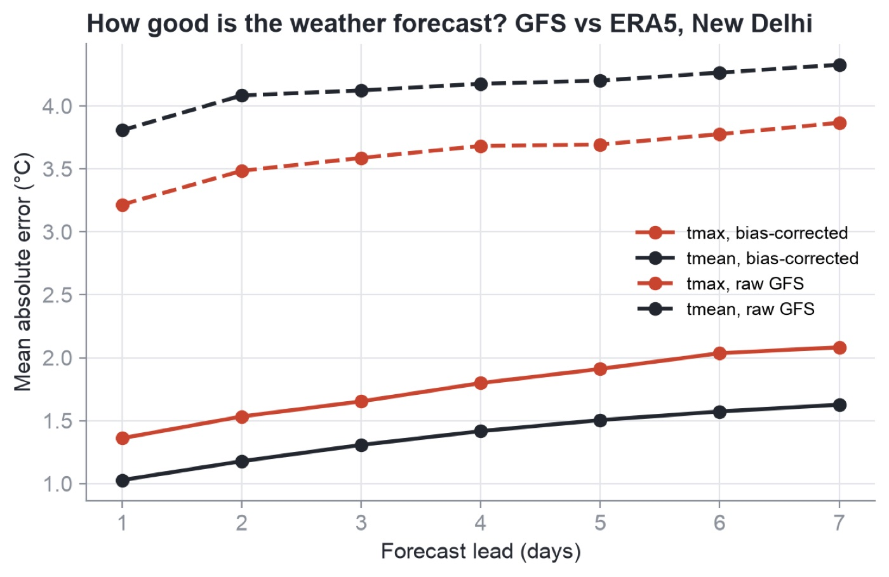
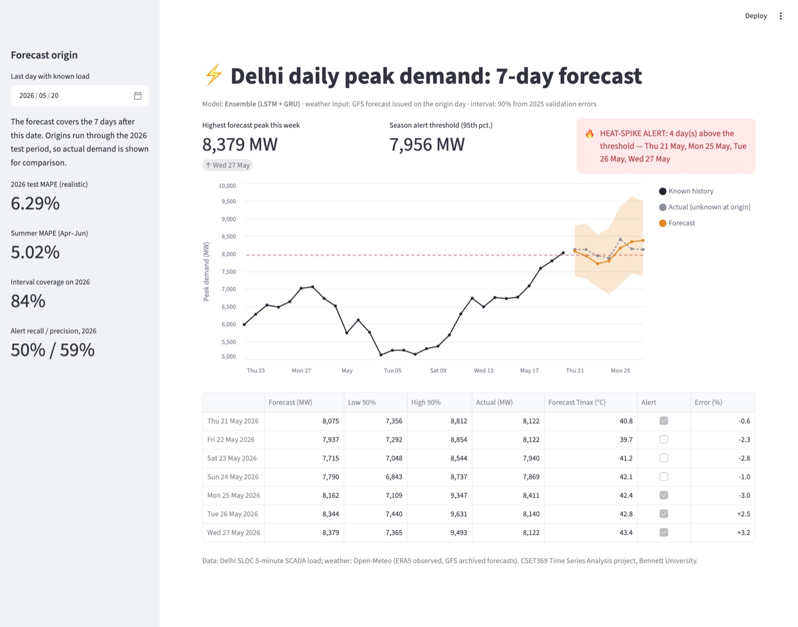

How much power will Delhi need at its busiest moment, one to seven days from now? This project answers that with 5-minute grid data, weather forecasts and twelve forecasting models, all tested on 2026 data they had never seen.
5.68%best error (MAPE), XGBoost with real weather forecasts
6.29%deployed LSTM + GRU ensemble, chosen before testing
Delhi's grid has to be ready for its hottest afternoon
Delhi's power demand peaks on summer afternoons, when air conditioners run across the city. The peak has grown from 7,292 MW in 2021 to 8,705 MW in 2026. Power companies buy most of that power in advance, so they need to know the peak a few days ahead.
If the forecast is too low, the grid has to buy expensive last-minute power or cut supply. If it is too high, money is wasted on power nobody uses.
Goal: forecast the daily peak demand (MW) for each of the next 7 days, give a range around it, and raise an alert before unusual heat-driven spikes.
TargetDaily peak demand of all of Delhi, in MW
Horizon1 to 7 days ahead, a new forecast every week
ScoreMAPE: the average error as a percent of the real peak
Extra90% range and a heat-spike alert
02 · The data
Real grid readings every 5 minutes, joined with weather
Load
Delhi State Load Despatch Centre (SLDC)
The grid operator publishes the load of Delhi and each power company (BRPL, BYPL, TPDDL, NDMC, MES) every 5 minutes. A downloader collected one page per day and turned it into a daily table.
delhisldc.org · public government data
Weather
Open-Meteo weather APIs
Daily temperature, humidity and rain for New Delhi from the ERA5 archive, plus archived GFS weather forecasts made 1 to 7 days before each day, so the models can be tested the way they would really be used.
open-meteo.com · CC BY 4.0
585,7395-minute readings
2,123days, 1 Jan 2021 to 24 Oct 2026
28days missing on the server
108incomplete days filled in, never scored
Cleaning: a reading more than 800 MW away from its 25-minute rolling median is a spike, and a reading below 500 MW is a dropout. Days with less than 80% of their 288 readings are filled in for training but never used to score a model.
03 · What the data shows
Heat drives the peak, and the peak keeps growing

Daily peak demand, 2021–2026. Every summer goes higher; winters stay near 4,000–5,500 MW.

Peaks by month: June and July are highest, March and November lowest.

Peak vs. maximum temperature: demand climbs quickly once days pass about 30 °C.

STL split: a strong yearly season (strength 0.80) on top of a rising trend.

Weekly rhythm: Sundays run about 3.8% below average, Fridays 2.2% above.
Yearly record peak
MW, highest day of each year
04 · Method
From a stationarity test to deep learning, all tested the same fair way
1
Stationarity
ADF and KPSS tests show the raw series is not stationary. After one ordinary and one weekly difference it is (ADF p < 0.001, KPSS p = 0.10), so the classical models use d = 1, D = 1 and a 7-day season.
2
Baselines and classical models
Naive (yesterday), seasonal naive (last week, last year), Holt-Winters, SARIMA and SARIMAX with yearly Fourier terms, holidays and degree-days. SARIMA orders were picked by AIC from 36 options, rejecting fits with unit roots (the lowest-AIC fit was one of them).
3
Prophet
Additive regression with yearly and weekly seasonality, Indian holidays and temperature regressors, refitted at every forecast date.
4
XGBoost
Seven separate tree models, one for each day ahead. Each predicts the ratio to last week's average, so it can forecast above any past record.
5
LSTM and GRU
Recurrent networks read the last 28 days and the 7 forecast days' weather and calendar, then output all 7 days at once. Three seeds each; the deployed model averages LSTM and GRU.
6
Rolling-origin backtest
Time order is never broken. Tune on 2021–2024, validate on 2025, then test once on 2026: forecast 7 days, move ahead 7 days, repeat. That is 41 forecasts and 278 scored days.
Realistic weather vs. observed weather
Most studies feed models the weather that actually happened, which nobody knows in advance. Here every model is scored twice: once with the observed weather (a perfect forecast) and once with the archived GFS forecast that was available on the day the forecast was made. Raw GFS runs about 4 °C too warm over Delhi, so each forecast is corrected by its average error over the previous 30 days, using only errors known at that time.
05 · Results
Twelve models, scored on 2026
Lower is better. Switch between the realistic setting (weather forecasts) and the ideal one (the weather that happened).
Test error (MAPE, %)
best in this setting deployed model no weather input other weather models
Weather is the big win. Adding weather cuts the error from about 9% to 5–6.5%. Even a 7-day-old weather forecast beats having none.
Real forecasts cost 1.3–2.6 points. With perfect weather the GRU wins (3.81%); with real forecasts XGBoost does (5.68%).
Honest model choice. The LSTM + GRU ensemble was picked on 2025 before testing. We report its 6.29% instead of switching to XGBoost after seeing 2026.
Model
Type
MAPE forecast wx
MAPE observed wx
RMSE MW
MAE MW
Summer MAPE
Val 2025 MAPE
RMSE, MAE and summer MAPE are for the realistic (forecast weather) setting. Summer = April–June 2026.
Error by days ahead
MAPE %, forecast weather
SARIMAX is best one day ahead (2.7%); XGBoost holds up best 5–7 days out.
What XGBoost relies on
share of total gain
How much hotter the target day is than today, and the forecast high temperature, matter most.

Record week: the 8,705 MW day was forecast at 7,801 MW, about 10% low. Models are careful beyond past extremes.

Weather forecast error by lead time, before and after the 30-day bias correction.
84.5%of 2026 days fell inside the 90% range (avg. width 1,351 MW)
38heat-spike days in 2026
22 / 8caught / false alarms, XGBoost
19 / 13caught / false alarms, deployed ensemble
06 · Forecast explorer
Go back to any week of 2026 and see what each model said
Every line is a real forecast from the backtest, made with only the data available on that day. Pick a forecast date and the models to compare.
Jump to
Weather used
Models
Alert rule: a day is flagged when the forecast is above the 95th percentile of peaks in the same season over the previous two years (the red dashed line). The shaded band is the deployed model's 90% range, built from its 2025 errors.
07 · Dashboard
A working dashboard for the grid operator

The project includes a Streamlit dashboard that runs on a laptop. Pick a date and it shows the deployed model's 7-day forecast, the 90% range, the forecast high temperature and a red alert banner when a spike is expected.
The screenshot is the week from 20 May 2026, when the alert fired correctly on four days.
The explorer above is a lighter, static version of it that runs in any browser.
08 · Limitations and future scope
What these numbers don't cover, and what comes next
Limitations
Weather stand-in. ERA5 reanalysis stands in for the weather-station readings an operator would use.
One weather model. Only GFS forecasts are archived back to 2021, and humidity forecasts start in mid-2024.
One validation year. The ranking of the top four models changed between 2025 and 2026.
Record days. The 2026 record day was forecast about 10% too low.
Range coverage. The 90% range covered 84.5% of days; 2026 was harder than 2025.
Scope. Daily peak for all of Delhi only; no hourly curve or split by power company.
Future scope
Live mode. Pull today's weather forecast so the dashboard predicts the real coming week.
Better weather input. Blend GFS with ECMWF and use the spread of an ensemble forecast as uncertainty.
Adaptive ranges. Recalibrate the range on a rolling window (conformal prediction) to keep 90% coverage.
Finer targets. Hourly load curve and forecasts for each power company.
Steadier model choice. Validate over 2023–2025 and weight an ensemble by recent skill.
The whole pipeline (download, clean, EDA, models, figures) runs from one command-line tool, and every number on this page comes from it.
10 · References
References
Hyndman, R. J., & Athanasopoulos, G. (2021). Forecasting: Principles and Practice (3rd ed.). OTexts.
Box, G. E. P., Jenkins, G. M., Reinsel, G. C., & Ljung, G. M. (2015). Time Series Analysis: Forecasting and Control (5th ed.). Wiley.
Hong, T., & Fan, S. (2016). Probabilistic electric load forecasting: A tutorial review. International Journal of Forecasting, 32(3), 914–938.
Taylor, S. J., & Letham, B. (2018). Forecasting at scale. The American Statistician, 72(1), 37–45.
Chen, T., & Guestrin, C. (2016). XGBoost: A scalable tree boosting system. Proc. 22nd ACM SIGKDD, 785–794.
Hochreiter, S., & Schmidhuber, J. (1997). Long short-term memory. Neural Computation, 9(8), 1735–1780.
Cho, K., et al. (2014). Learning phrase representations using RNN encoder–decoder for statistical machine translation. Proc. EMNLP, 1724–1734.
Ben Taieb, S., Bontempi, G., Atiya, A. F., & Sorjamaa, A. (2012). A review and comparison of strategies for multi-step ahead time series forecasting. Expert Systems with Applications, 39(8), 7067–7083.
Kong, W., et al. (2019). Short-term residential load forecasting based on LSTM recurrent neural network. IEEE Transactions on Smart Grid, 10(1), 841–851.
Makridakis, S., Spiliotis, E., & Assimakopoulos, V. (2018). Statistical and machine learning forecasting methods: Concerns and ways forward. PLoS ONE, 13(3), e0194889.
Vovk, V., Gammerman, A., & Shafer, G. (2005). Algorithmic Learning in a Random World. Springer.
Hersbach, H., et al. (2020). The ERA5 global reanalysis. Quarterly Journal of the Royal Meteorological Society, 146(730), 1999–2049.
Data: State Load Despatch Centre, Delhi, delhisldc.org; Open-Meteo Historical Weather and Historical Forecast APIs, open-meteo.com (CC BY 4.0).
SK
Author
Md Shadab Iqbal Khan
B.Tech Computer Science and Engineering, Bennett University
Solo project for CSET369 Time Series Analysis, 2026. Data collection, cleaning, modelling, dashboard and this website by the author.